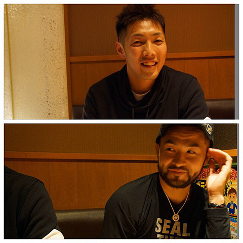
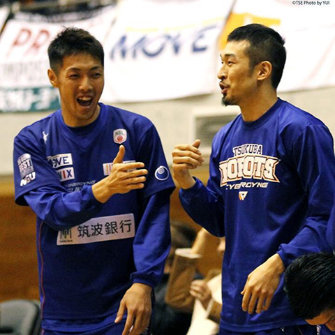
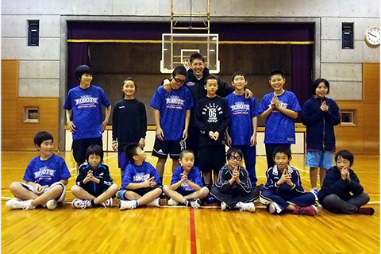
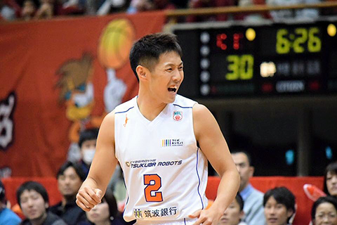
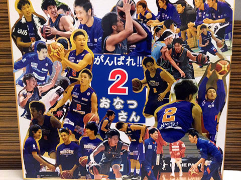

NBLサイバーダインつくばロボッツ夏達維選手のとある一週間
愛知出身、夏選手によるプロ生活の内容を中心としたブログ｢夏ログ｣！
カズさん 延田さん

この日はチームはオフ！
名古屋で3×3マガジンを制作したり、リーグを運営したりとバスケ大好き延田さんがわざわざ名古屋から取材に来てくれました！
しかも僕の自主練 延田さんスクールまで同行させてしまってすいませんw
スクール後にカズさん、延田さん、僕の３人で夜遅くまでバスケの話！
みんな全く違うバスケ人生を歩んでいるので、いろんな意見やお話が聞けて楽しかったです！
何か目標を持って続けていくと必ず「応援してくれる人」「批判する人」と2種類に分かれますね^^;
でもどちらも必要な存在だと思います！
もちろん応援してくれる人には感謝します！
批判される＝僕の話題になる。という事で、頑張ろうって気になります！！
ってなんでこんな事言ったのかわかりませんが笑
努力し続けて頑張っていきます！！
12/19-20 vs レバンガ北海道 年内最後のホーム戦！
あっという間に年内最後のホーム戦がきました！
早いです(･_･;^T
結果は2連敗.......
去年レンタル移籍でロボッツに来た野口選手！僕はのーさんと呼んでいるのですが笑
のーさんがすごい活躍！
負けはかなり悔しいですが、のーさんとはロボッツの時にオフの時は必ず毎日一緒に練習していた仲なので活躍を見て素直に嬉しかったです！
のーさんがシュートを決めた瞬間は「最悪(怒)決めんなよ(怒)」って思いましたがw
僕は今回も2試合通してプレイタイムはもらえませんでしたT^T
いつも会場で声をかけてくれたり、メッセージをくれたりしてくれる人達になかなか成長した姿をお見せできなくて申し訳ないです。。。
まだまだ実力不足の練習不足ですね！！
スクールの生徒も会場まで来て応援してくれる子がたくさんいるので、その子達のためにもコート上で頑張ってる姿を見せれるように努力します！！！
今週はアウェイ3連戦なのですが、僕はメンバー入りできなかったので留守番T^T
これは本当に死ぬほど悔しいし、自分へのストレス半端ない。。。
でも切り替えてトレーニングしようと思います！
メンバーから外れる連絡をもらってからすぐにトレーナーに電話して、トレーニングの予約！笑
名古屋でお世話になったトレーナーにみっちりしごいてもらいます！！
今年もあと約1週間！
やれる事やって2015年を終わります！！
皆様も体調管理に気をつけて健康的に今年を終えましょう！！
では！夜行バスからお届けしました笑

年内最後のクラス！！
みんなかわいいw
北海道戦の夜！
山中トレーナーと山とれ！
暗闇に消えていきます笑
東芝ブレイブサンダース神奈川 アウェイ戦

本当はメンバーから外れていたアウェイ戦.....いろいろあり、名古屋に滞在時間2時間弱でそのまま横浜へw
どんな形であれ試合に行けてよかったです^^;
ただ試合では久々に序盤で使っていただいたのですが、頭が真っ白に.....
何で緊張したり頭が真っ白になったりするんですかね？？
シーズン当初は試合に使ってもらえる時は「やった！試合に出れる！」って気持ちでしたが、今回は頭が真っ白。。。なぜ？笑
スポーツにしろ何にしろ、こういう事は不思議ですね^^; メンタルが大事ってことかな！？
今週末は年内最後のアウェイ戦！！ どんな形でも行ける事になったので頑張ってきます！！
そしてメリークリスマスですね^ ^
サンタさんに強靭なメンタルを頼んでおきます笑
では！
